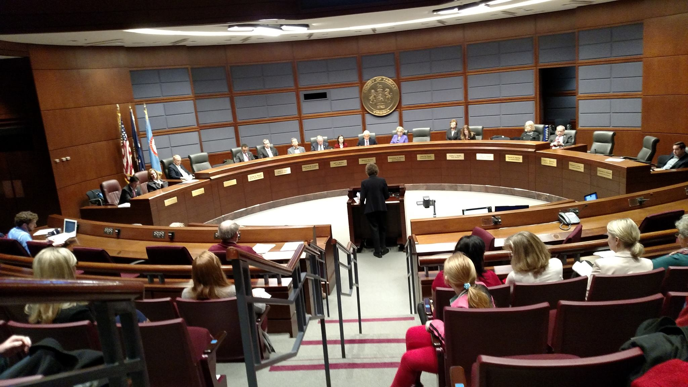

A new low in Fairfax county politics
Scenes from the March 1 Budget Hearing
What is at Stake
As it stands there will be $68 million budget deficit for FCPS in 2017. This is the worst-case scenario that was anticipated by the School Board, and it will require budget cuts that will damage language programs.
Learn MoreDemonstrate Your Support
Upcoming meetings, hearings, etc
Learn MoreContact Your Representatives
Contact - call, email, or write - the Fairfax County Board of Supervisors and ask them to fully fund FCPS.
 Learn More